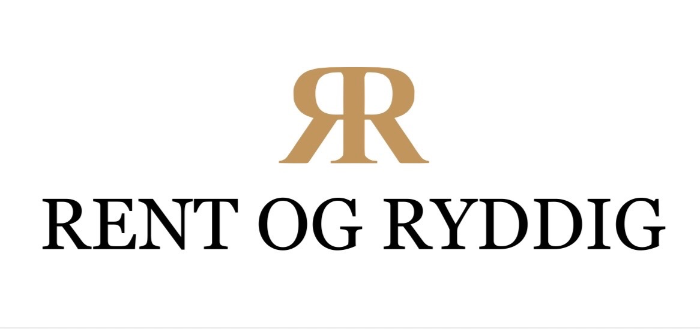

1. Cormorant Garamond
RENT OG RYDDIG
Logoen din er vist øverst som referanse. Under ser du «RENT OG RYDDIG» i ni forskjellige serif-fonter, i samme størrelse. Den som ligner mest på logo-teksten er den vi bør bruke på nettsiden også.

Åpne denne i nettleseren: http://localhost:8765/_preview-font.html. Si hvilket nummer (1–9) som ligner mest, eller send et bilde av favoritten — så bytter jeg den inn på hele siden.